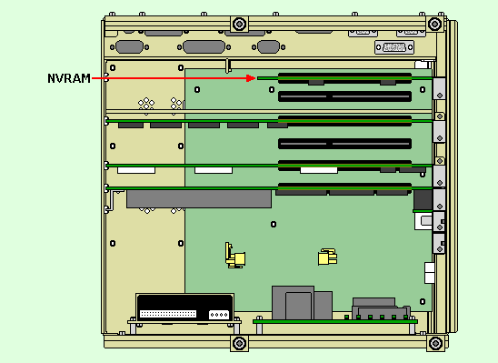

NVRAM PCB Operating Principles
This document details the operating principles for the NVRAM PCB.
PCB Function
The NVRAM PCB provides a storage location for setting and other important information, that if lost, would be time consuming to restore or reenter. Even with the power off, this PCB retains the information it contains.
PCB Location

Operational Overview
The NVRAM PCB provides one megabyte of nonvolatile random access memory (NVRAM) that remembers the contents even after the power is removed. The PCB accomplishes this by monitoring the +5 V DC supply to the chip and if the voltage drops below 4.75 V, an internal battery takes over maintaining power to the RAM. The RAM memory used in this design is a special low-power memory, and when combined with a lithium battery provides more than ten years of memory retention.
The CPU accesses the NVRAM memory board in the same way that it accesses normal memory. The memory board is located in a special memory hole in the address space of the CPU between 15 MB and 16 MB of CPU physical address space.
Component Locations
Component locations are not provided for this PCB. Service personnel are advised not to change or repair this PCB unless directed to do so by the support group.
PCB Features and Functions
- Substrate count
- Empty dilution, RV, sample vessels (once loaded into the supply carriage)
- Sample vessel map and database
- Reaction vessel map and database
- Reagent pack locations and database (for onboard packs only)
- Chronicle (time stamp and temperature of all vessels until they are dropped into the waste chute)
Interacting Devices
The NVRAM PCB interacts with the CPU PCB.